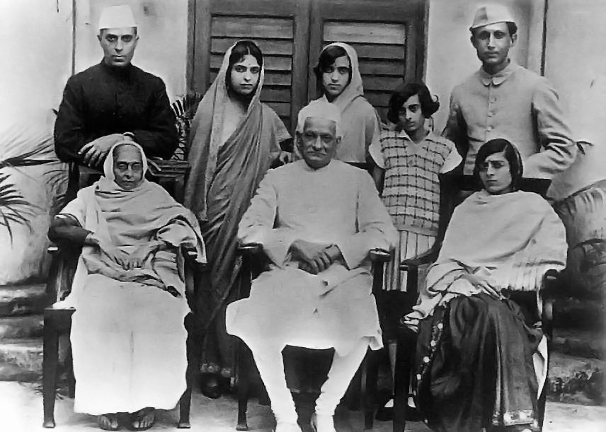
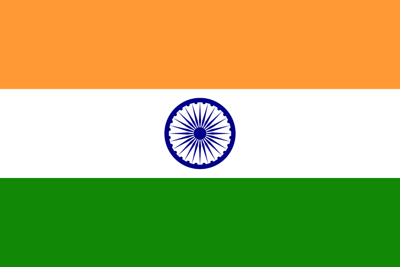
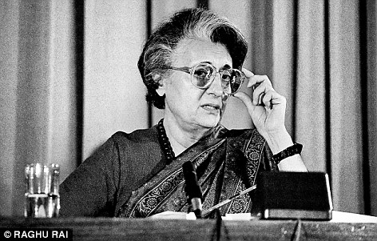

IndiraGandhi
Early Life
Indira Gandhi was born on November 19, 1917, in Allahabad, British India (now India), to Kamala and Jawaharlal Nehru. She belonged to the Nehru-Gandhi political dynasty, as her father, Jawaharlal Nehru, went on to become the first Prime Minister of India. Indira Gandhi grew up in a politically active household, deeply influenced by her father's involvement in the Indian independence movement.
Summary
Indira Gandhi (1917-1984) was an Indian politician and the first woman Prime Minister of India. She was born on November 19, 1917, in Allahabad, British India (now India), into the Nehru-Gandhi political dynasty. Her father, Jawaharlal Nehru, was the first Prime Minister of India.
Indira Gandhi became involved in politics at a young age and served as her father's personal assistant during his tenure as Prime Minister. She was a member of the Indian National Congress (INC), the country's leading political party. In 1966, following the death of Prime Minister Lal Bahadur Shastri, she was elected as the leader of the INC and became the Prime Minister of India.
Terms in Office as Prime Minister of India
- 1966-1971 (First Term)
- 1971-1977 (Second Term)
- 1980-1984 (Third Term)
During her first term as Prime Minister from 1966 to 1971, Indira Gandhi focused on implementing social and economic reforms. She introduced policies to alleviate poverty, improve agricultural productivity, and promote rural development. One of her notable achievements during this period was the successful conduct of the Green Revolution, which significantly increased food production in India.
In 1971, Indira Gandhi led India during the Indo-Pakistani War, which resulted in the creation of Bangladesh. This military victory boosted her popularity and contributed to her re-election for a second term as Prime Minister.
During her second term from 1971 to 1977, Indira Gandhi faced a challenging political climate marked by social unrest and economic difficulties. She declared a state of emergency in 1975, leading to the suspension of civil liberties and the arrest of political opponents. However, her government also implemented several pro-poor initiatives, such as the nationalization of banks and the expansion of welfare programs.
After a brief period of political opposition, Indira Gandhi returned to power in 1980 for her third term as Prime Minister. During this term, she focused on economic liberalization and initiated policies to attract foreign investment and promote industrial growth. However, her tenure was cut short when she was assassinated in 1984.
Major Political Achievements
During her time as Prime Minister, Indira Gandhi implemented several significant policies and initiatives that impacted Indian society and governance. Some of her major political achievements include:
- Green Revolution: Indira Gandhi played a key role in promoting agricultural reforms and the Green Revolution, which aimed to increase agricultural productivity and self-sufficiency in food production in India.
- Nationalization of Banks: She led the nationalization of several major banks in India, which aimed to ensure financial inclusion and provide access to banking services for all sections of society.
- Expansion of Public Sector: Indira Gandhi focused on the expansion of the public sector in industries such as steel, coal, and oil, aiming for self-reliance and economic growth.
- Emergency Period: Indira Gandhi declared a state of emergency in India from 1975 to 1977, during which civil liberties were suspended and political opposition was suppressed. This period was highly controversial and drew both criticism and support.
- Foreign Policy: She pursued an active foreign policy, aimed at strengthening India's position in the international arena. She played a significant role in the formation of the Non-Aligned Movement and was known for her strong stance against imperialism and colonialism.
Challenges and Legacy
Indira Gandhi faced numerous challenges during her tenure as Prime Minister. Some of the notable challenges include:
- Political Opposition: She faced strong opposition from political rivals and factions within her own partythat questioned her leadership and policies.
- Separatist Movements: Indira Gandhi had to deal with separatist movements in various regions of India, such as Punjab and Assam, which posed threats to national unity and security.
- Economic Issues: India faced economic challenges during her tenure, including inflation, poverty, and unemployment, which required her government to implement economic reforms and address social welfare.
Despite the challenges, Indira Gandhi left a lasting legacy on Indian politics and society. Her leadership and policies shaped the course of India's development and governance. She was known for her strong and decisive leadership style, as well as her commitment to social justice and empowerment of marginalized communities. However, her legacy also remains controversial, with debates surrounding her authoritarian tendencies and the events of the Emergency period. Indira Gandhi's impact on Indian politics and her role as the first woman Prime Minister of India continue to be subjects of study and discussion.